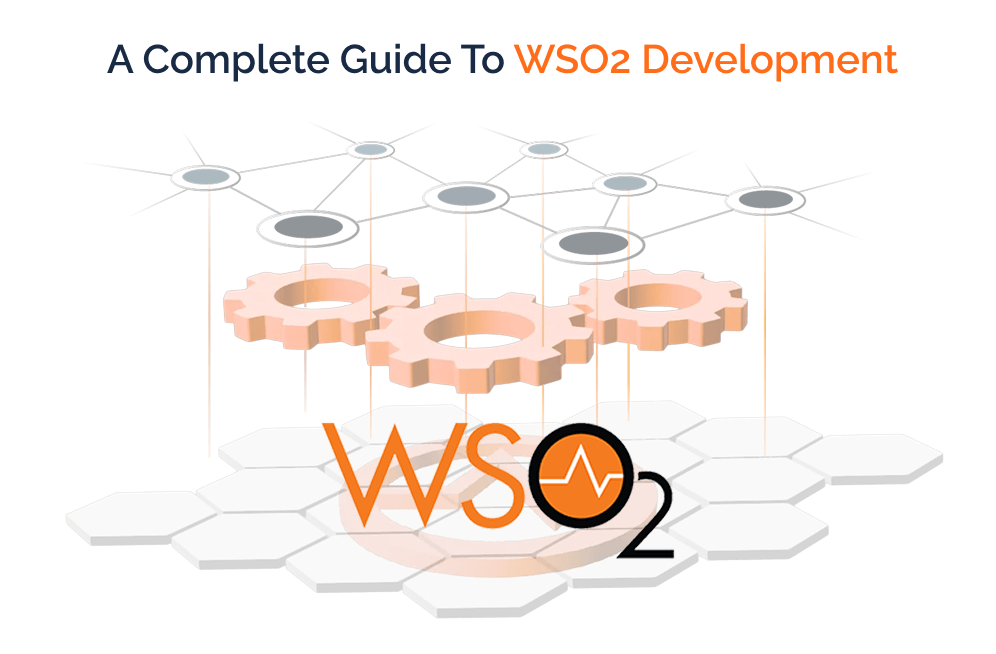
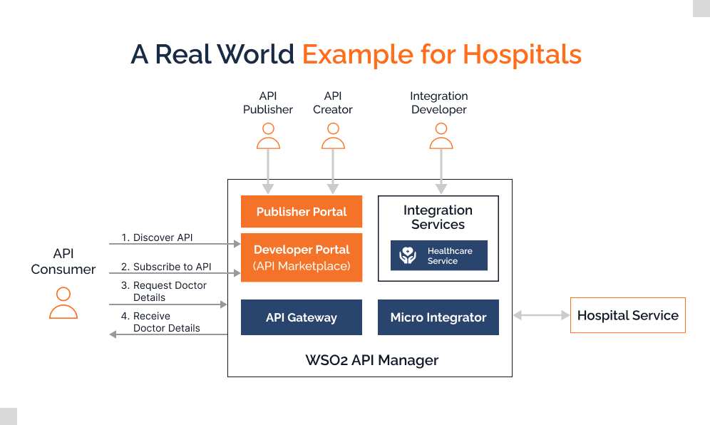

If you have found this blog then I would assume that you are a business owner or a developer looking to explore what WSO2 can do and how you can use it to build better applications. The WSO2 API manager is a very popular solution for managing your APIs and allows businesses to create, publish and manage APIs securely. WSO2 as a whole is an open source technology provider that specialize in API management, integration and identity solutions. And you heard it right, it's open source which means that if you’re using the technology to build applications for your business you don’t have to worry about paying any licensing fees. Which is why it is very popular with developers around the world and also why I decided to write this blog post. In this blog, we will go through WSO2’s solutions and see how businesses can use it to enhance their applications.

We will also take a look at solutions like the WSO2 API manager to understand how you can manage your APIs seamlessly and why you should use this technology to do that. So without any further ado let’s jump right into our blog.
Let’s get started.
What is The WSO2 API Platform?
Now let’s just take care of the elephant in the room first and see what the word means. It’s not really an API that WSO2 provides; any API that you create using the WSO2 platform can be called a WSO2 API. But now that we have that covered let’s discuss a bit more in depth about the technology and why you should be using it. These APIs are created using their API manager and these APIs facilitate communication between different applications which allows you to expose your services securely. The WSO2 API manager provides you with a centralized gateway to manage your APIs, ensure that they are secure, for throttling and to monitor your APIs seamlessly.
There are a few core components of the WSO2 API manager and you have to learn about them if you want to use the platform effectively.
- API Gateway: This gateway handles things like API requests, enforces policies and routes your traffic efficiently.
- Publisher Portal: The publisher portal allows you to create, document and manage your APIs.
- Developer Portal: This portal provides you with self services API discovery and subscription for third party developers.
- Traffic Management: This feature allows you to implement rate limiting, caching and throttling to optimize performance.
- Security & Authentication: It supports OAuth2, JWT, mutual SSL and API key authentication.
There are also a few different types of APIs that you can manage with WSO2:
- Public APIs: These APIs would be open to external developers for innovation and integration.
- Private APIs: These kinds of APIs for use in your internal systems and for your employees to use securely.
- Partner APIs: These are APIs that you would share with your business partners with specific access controls.
- Monetized APIs: Now these are the kinds of APIs you would be familiar with if you’re a developer because these are provided as a paid service with costs based on their usage.
A Deep Dive Into WSO2 API Integration
As you may already know modern applications rely heavily on APIs to connect to things like microservices, databases and external services. What the WSO2 API manager does is that it simplifies the integration process of these APIs and provides a centralized hub for managing these APIs across distributed environments. WSO2 also provides you with resources that you can use to integrate APIs into your applications in simple steps. The first step is the creation of the APIs where you define the API endpoints, methods and authentication mechanisms. Then comes the publishing and deployment where you deploy your APIs to the gateway and make them accessible through the developer portal. And very importantly you have to make sure that you have security implementations where you enforce authentication and authorization policies.

WSO2 API manager also provides you with features to manage your traffic where you can apply throttling, caching and loading balancing to streamline the API consumption. Another major part of the process is the monitoring and analytics. You have to be able to track things like your API usage, detect anomalies in the system and apply optimizations for better performance. Integration with third party services is also a big deal because many times you would want to use third party services like payment gateways to enable features inside your applications. The good news there is that the WSO2 API manager supports integration with cloud services like AWS, Azure and Google Cloud which are the providers most application developers use. You can also connect seamlessly with enterprise applications that you may be using like for example Salesforce, SAP and modern applications.
How Does WSO2 Work?
We are moving farther now and let’s look at how WSO2 really works and we are going to start with an overview of the architecture. Firstly, WSO2 is based on microservices architecture which means that it is scalable and flexible. It also uses API Gateway as a centralized control point for API traffic which is also a great benefit you get with WSO2 API manager. What’s more impressive is that WSO2 has built in capabilities for managing identity and access for secure API interactions. It also includes great tools for analytics and monitoring which is great for getting performance insight.
The Workflow of API Requests in WSO2:
Client Request: This is the point where an application or user initiates an API request.
API Gateway Processing: At this step the request is validated, checked against security policies and routed to the backend.
Backend Response: At this point the API fetches the data or executes operations and then sends the response back.
Logging & analytics: This is where the request details are recorded for monitoring the performance and for auditing using the WSO2 API manager.
One of the great benefits of WSO2 is that you get multiple options for deploying your APIs. There are 3 options that you can choose from; On Premises, Cloud Based and Hybrid and all of these options make sense for different purposes. For example if you have a financial business or if you are in the healthcare space then it would make sense for you to deploy your APIs and application locally. Meaning that you would install it within your company’s infrastructure for getting full control. This is especially important for finance and healthcare companies because you would handle a lot of your customer’s personal data and you have to also comply with different global regulations like HIPAA, GDPR, CCPA and SOC2.
WSO2 API solutions can also be used in a cloud based setting where you can deploy your solution using cloud providers like AWS, Azure and Google Cloud. This is great for businesses that want rapid scaling like in the case of SaaS products or consumer facing applications where you will handle millions of users with good monthly growth of users. Last but not least is a combination of both these approaches which you can call “Hybrid.” Here you would combine on premises and cloud infrastructure for flexibility and deploy APIs that handle sensitive information on premises servers and deploy APIs that handle functionality related APIs on cloud infrastructure. The WSO2 API is so flexible that you can truly tailor your API solutions to the specific needs of your business.
Discover The Key Features Of WSO2
The good news as you may have already figured out is that WSO2 provides a framework for end to end management of your API lifecycle. Let’s break these up into their individual components and see what features you get with WSO2.
API Design
For the API design you can use something like OpenAPI/Swagger specifications. WSO2 supports popular API types like REST GraphQL, SOAP and WebSocket APIs. It also provides you with API versioning so that you can maintain backward compatibility.
The WSO2 API manager is also great for API development and gives you a very intuitive interface where you can define APIn resources and methods. You can also integrate with backend services like REST endpoints, SOAP services and event driven architectures. WSO2 also allows you to set rate limits to your APIs, enable access control and set monetization policies during the development.
As we already discussed in an early part of this blog WSO2 supports deployment on cloud native, on premises and hybrid infrastructure. You can also automate API deployment by using continuous integration/continuous deployment or CI/CD pipelines. It also enables API containerization using Docker and Kubernetes for superior scalability.
The WSO2 API manager also provides you with powerful tools to monitor and analyze the performance of your APIs. It provides you with detailed dashboards where you can monitor your API traffic in real time. It logs and racks API performance, latency and errors so that you can always learn from your data and make adjustments to make your system more efficient. It also integrates with external monitoring tools like Prometheus, Grafana and ELK stack if you want to use those solutions.
This is an advanced feature you get with WSO2 where you can control the depreciation of older API versions to make way for newer versions. This is especially great if you provide customers with paid APIs and you can notify API consumers before discontinuing the services. WSO2 API manager also maintains backwards compatibility by providing alternative endpoints.
The API manager also comes with security features that are enterprise grade which you can use to protect your API endpoints and ensure that your data exchanges are secure.
- OAuth2 & OpenID Connect: It provides authentication based on tokens which ensure secure aPI access.
- JSON Web Tokens or JWT: Ensures that your API requests are authentic and secure.
- Mutual TLS or mTLS: It strengthens your API security by verifying client server connections.
- API Key Authentication: This allows you to implement simple authentication using unique API keys.
- Role Based Access Control: The WSO2 API manager allows you to assign permissions based on the user role.
- Multi Factor Authentication: This enhances the security for API consumers by authenticating their access using one time passwords.
- Scope Based Authorization: This allows you to restrict API access based on predefined scopes.
- IP Whitelisting & Blacklisting: Here you can easily restrict access to your APIs based on IP addresses.
- Request Validation & Payload Security: It prevents things like SQL injections, XML external entity or XXE and cross site scripting or XSS.
- GDPR & HIPAA Compliance: Another great feature in the WSO2 API manager is that it comes with data privacy and security if you operate in highly regulated industries like finance and healthcare.
WSO2’s API manager is built on microservices architecture which ensures that you get high availability and scalability if you’re an enterprise that handles large volumes of API requests. But to understand how all of this works let’s look at some of the key performance features that you get with WSO2. Horizontal and vertical scaling is something you can do with the platform where you can scale API gateway nodes dynamically based on the traffic demands. You can also use Kubernetes and cloud auto scaling for distributed environments and balance loads. WSO2 API manager also supports asynchronous processing which optimizes API response times by handling requests asynchronously. You can also enable caching and throttling which reduces backend load by caching AI response and limits excessive API calls. It also supports data streaming in real time using solutions like Kafka, RabbitMQ and WebSockets.
Now let’s look at some performance optimization strategies that you can use to maximize the performance of your APIs. With WSO2 you get effective traffic management where you can implement rate limits and quota management for your APIs. The WSO2 API manager also allows you to distribute your deployments which means that you can deploy API gateways across multiple data centers for redundancy. It also supports clustering of API gateway which is where you can ensure high availability by clustering API gateway instances.
Another great thing going for WSO2 are the tools they provide for monitoring and analyzing your APIs. This includes providing businesses with real time monitoring, logging and insights so that you can optimize your API performance and detect any security threats. The first among these are the API monitoring and usage tracking features you get with WSO2 API manager where you can do real time API traffic analysis and capture request response data, error rates and latencies. You also get analytics on the basis of APIs and users so that you can track APIs on the basis of endpoints as well as consumers. Performance dashboards are also something you get with WSO2 where you can access visual insights through their built in analytics tools.
Apart from this you also get great tools for security and compliance monitoring. A great example for this is the anomaly detection feature that you get with the WSO2 API manager where you can identify unusual API traffic patterns and potential breaches of security. You also get access to the audit logging feature that maintains logs for API access, modifications and failures. Another great feature is for GDPR compliant data retention where you can ensure data privacy while storing logs. Additionally, WSO2 also allows you to integrate with external analytics tools to make the most out of your data and make your systems more efficient. For example you can implement the ELK stack which enables you to have custom log processing and visualization. The WSO2 API manager allows you to connect with advanced performance monitoring tools like Premetheus and Grafana. You can also connect Google Analytics and business intelligence tools which allow for tracking API events and business intelligence reporting.
The WSO2 developer portal or the API Marketplace as it is sometimes called provides you with a self service interface for exploring, testing and subscribing to different APIs.
- API Discovery & Documentation: It allows developers to browse API catalogs and view relevant documentation.
- API Subscription Management: This allows users to register for API access and manage usage limits easily.
- Interactive API Testing: This is also called the Try It Out Feature and lets you access the built in console for testing your endpoints.
- SDK & Code Samples: The WSO2 API manager also provides you with auto generated SDKs which support multiple programming languages.
- API Monetization: You can easily monetize your APIs with multiple models like pay as you go, subscriptions and billing integrations.
Benefits of the Developer Portal
One of the major benefits of the developer portal is that it enhances API adoption and encourages third party developers to use the APIs. Collaboration is a big part of modern software development and features like the ones WSO2 provides enhance opportunities for collaboration. It also improves the discoverability of your APIs where internal and external teams can easily find and test your APIs with the WSO2 API manager. And of course you can make use of API economy and monetize your aPIs for generating additional revenue for your business and even if you are an independent developer.
Let’s Learn About The Use Cases Of WSO2
The use cases for WSO2 are as wide as the features they provide and we are going to take a quick look at some of the different ways you can use the technology.
Financial services can benefit greatly with WSO2 with features that let you build API driven applications like banking, implement fintech integrations and ensure regulatory compliance. WSO2 API manager is a great solution for open banking and PSD2 compliance and enables banks to expose APIs securely to any third party providers. It also supports OAuth2, OpenID Connect and API security standards which are very important for finance applications. You can also seamlessly manage customer consent and access control when it comes to banking data. Additionally, it allows you to ensure compliance with open banking standards like PSD2, UK Open Banking and so on.
For e-commerce businesses WSO2 provides features to streamline your technology components by integrating storefronts, payment gateways, supply chains and customer management systems. The WSO2 API manager allows you to seamlessly integrate payment gateways like Stripe, PayPal, Square and so on. It also implements PCI DSS compliant secure transactions as well as helping you manage transaction security using tokenizations and encrypted payment data. You can also integrate web, mobile and in store shopping experiences through APIs. Additionally, it also allows you to streamline your supply chain operations with features like automated order fulfillment, shipment tracking and warehouse management.
WSO2 is a great solution for businesses operating in the healthcare sector and allows them to connect systems like Electronic Medical Records, hospital management platforms and insurance providers which ensures that your data exchanges are secure and compliant. The WSO2 API has FHIR & HL7 based API interoperability which means that it supports cross institution data sharing for organizations like hospitals, labs and insurers. All of this while ensuring compliance with global regulations lole HIPAA, GDPR and regional healthcare regulations.
WSO3 has been a strong choice for building applications in the public sector because it enables API driven data exchange and e-government services. One of the things you can build using WSO2 for the government is citizen portals and digital identity management solutions where you can enable secure access to government service using single sign on or SSO. WSO2 API manager also supports national identity verification using technologies like OAuth2, OpenID Connect and blockchain based ID solutions. The platform also supports open data and smart city initiatives where you can seamlessly facilitate sharing of data between government agencies through standardized APIs.
An Overview Of The WSO2 Development Framework
The WSO2 framework is very easy to approach and allows you to create solutions for your business rapidly using popular software development technologies. It supports various programming languages. The architecture is based on Java but it supports languages like Python, JavaScript and other languages for providing you with maximum flexibility. The WSO2 API manager also allows you to customize your solutions using Java extensions and scripting. The development approach is also very flexible because of the modular and microservices based architecture and WSO2 also provides you with software development kits or SDKs for customizing your APIs. It also supports automated deployment with Jenkins, GitHub Actions and Kubernetes as well as providing useful tools for version control and rollback mechanisms.
A Closer Look Into The WSO2 Enterprise Integrator Documentation
Firstly, let’s talk about why documentation is so important because it helps developers understand system configurations, integration patterns and the best practices to follow when using WSO2 API manager. Many people assume that just because you are a developer you would know how to use all technologies especially when you know the programming language or frameworks. However, each solution is different and it is far easier to build the software you need if you have things like examples, tutorials and API references helping you onboard quickly. Now the documentation for WSO2 is quite extensive and contains the following sections.
- Getting Started Guide: It covers installation, configuration patterns and best practices.
- API Development Guide: It covers detailed and step by step instructions for building and managing your APIs.
- Security & Authentication: This covers the WSO2 API manager documentation on implementing OAuth, JQT and other security protocols.
- Performance Optimization: This covers the best practices you should follow for scaling your API traffic and improving efficiency.
- Troubleshooting & FAQs: This section would cover the common issues that you may encounter and their solutions.
WSO2 Integration Tools That You Need To Know About
WSO2 provides you with a lot more features and tools than the API manager and is a full fledged API management solution for business. Let’s take a look at some of the tools available and see how you can use them to build WSO2 API for your business.
The API manager is an end to end solution for managing your APIs and can help you ensign, publish, secure, monitor and manage your APIs throughout their lifecycle. It also provides you with security and access control features for things like implementing OAuth2, OpenID Connect, JWT Authentication and API key security. It supports access controls based on user roles and you can also integrate it with external identity providers. You also get features like rate limiting and traffic control where you can enable throttling policies to prevent API abuse and to make sure that users use your WSO2 API fairly. The API manager also provides you with tools to monetize your APIs where you can create customized pricing plans for API usage and distribute it as a service. It also supports billing and invoicing integration for monetizing your APIs.
The enterprise integrator from WSO2 is a very comprehensive middleware platform and is designed for integrating applications, databases, legacy systems and service orchestration for your business. WSO2’s Enterprise Service Bus or ESB is a system that facilitates things like message transformation, protocol mediation and service orchestration. It supports multiple communication protocols which includes HTTP. JMS, MQTT and FTP. It also supports data integration and ETL for your WSO2 API based application and can connect and synchronize structured as well as unstructured data across different databases. Additionally, it supports extract, transform and load processes for data warehouses and analytics. It also provides you with pre-built connectors and adapters like ready to use connectors for Salesforce, SAP, AWS, Google Cloud and more. This reduces the complexity of integrating third party services.
If you’re looking for a robust identity and access management solution for your business then the identity server is the right solution for you where you can do things like authentication, authorization and identity federation for your enterprise. It also allows you to integrate your WSO2 API with external identity providers like Google, Facebook, Azure AD and so on. There is also the privileged access management or PAM where you can securely manage access for privileged users to critical applications and systems. It also gives you tools for auditing and session recording for high security environments. The single sign on feature is also beneficial for businesses looking to enable SSO across multiple applications and can provide your users with a seamless experience.
Their micro integrator is an integration engine that is lightweight and is designed for containerized and cloud native environments. It is container and Kubernetes ready for use in your WSO2 API development and is built for microservices architecture optimized for Docker and Kubernetes. The API driven service to service communication you get with WSO2 also minimizes your overhead. There is also a service chaining and message mediation feature that orchestrates and mediates messages between your microservices efficiently. The platform also supports low latency and high throughput designed for high performance API interactions in low latency environments. This is ideal if you’re building real time applications like in the case of fintech, gaming and IoT.
If you’re building a WSO2 API for use cases like data streaming then the streaming integrator is the perfect solution for real time data streaming, analytics and event processing. It is capable of processing high velocity data streams from IoT devices, sensors and logs. It also supports event based architectures with low latency processing. The complex event processing or CEP is also a great addition to this and is capable of detecting patterns and correlations in streaming data. This enables features like fraud detection, anomaly detection and predictive analytics. You can also integrate your application and WSO2 API with big data and AI systems like Apache Kafka, Apache Spark and Hadoop for big data analytics. It also enables real time insights using machine learning models.
Embrace The Future Of API Management with WSO2 Framework
WSO2 is the perfect solution for businesses looking to build scalable APIs for their business applications. The platform offers you a comprehensive suite of integration tools for all your diverse business needs from API lifecycle management and secure identity authentication to real time analytics. The WSO2 API management solution is also open source and enterprise grade which means that you can build scalable APIs for your business without having to worry about huge overheads and inferior solutions. It is a modern integration and API management platform with support for microservices architecture. By using WSO2 your organization can reduce the complexity of integration, improve the security of your applications and APIs and accelerate innovation.
CO-Founder
Yokesh Sankar, Co-Founder and Chief Operating Officer of Sparkout Tech Solutions, leverages his expertise to drive innovation and operational excellence in the software industry. Passionate about empowering individuals with essential skills, he uses technology to streamline business processes and enhance efficiency. He advocates for AI and blockchain adoption, helping businesses integrate these technologies seamlessly into their operations. Staying ahead of AI trends, Yokesh explores industry applications and shares insights to foster growth and knowledge in the tech sector.